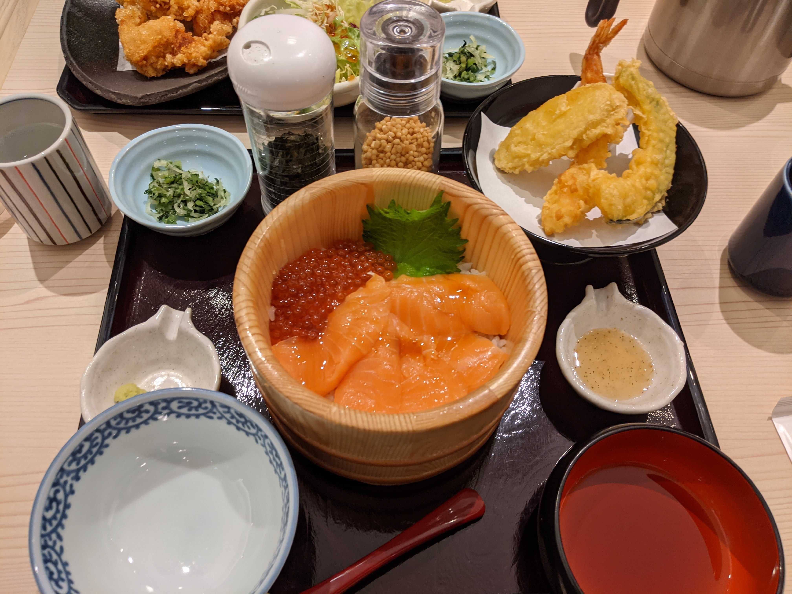

「すべては、おいしい瞬間のために」をモットーに
おひつごはんをはじめとし天ぷら和食処、ごはん処など、3種類の四六時中ブランドで全国に店舗展開している。
ここに千葉工業大学からお店までは、徒歩10分
お昼時にいった際には店内は落ち着いた雰囲気で主婦やファミリー層が多かったです。
また四六時中ではおひつごはんを「だしのみ」「おひつごはん」「おひつごはんにだしを入れる」の3度に分けて楽しむことができます。
お店の最新情報や感想をXで検索する：#四六時中